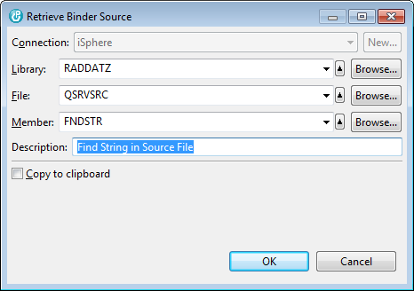

Menu option:
Dialog:

| Connection | - | Connection to the host where the retrieved binder source is stored. |
| Library | - | Library that contains the source file that is used to store the binder source. |
| File | - | Source file where the binder source is stored. |
| Member | - | Member that is used to store the binder source. |
| Description | - | Description of the source member that is going to hold the binder store. |
| Copy to clipboard | - | Specifies whether the binder source is retrieved into a source member or copied to the clipboard. When the binder source is copied to the clipboard, the source member input fields are disabled. |
| Note: iSphere uses file XBNDSRCX in library QTEMP to retrieve the binder source into temporary member XBNDSRCX when copying the binder source to the clipboard. |